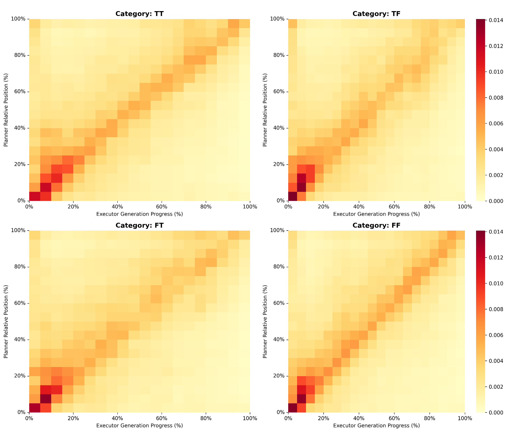
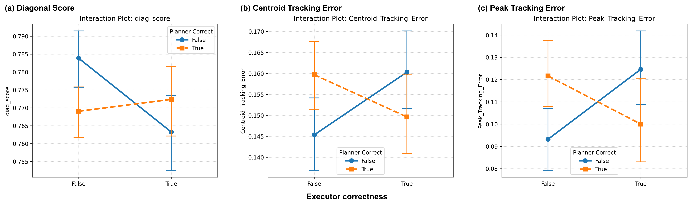
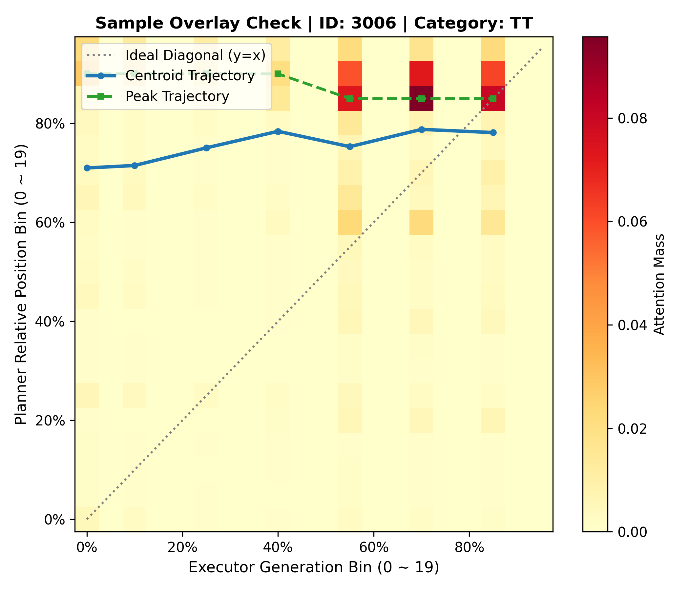

1. Introduction
A Planner–Executor system separates reasoning into two stages: a Planner proposes an intermediate plan, and an Executor uses that plan to produce the final answer. When only a sparse terminal reward is available, the training signal tells us whether the final outcome was successful, but provides little information about which part of the computation was responsible for that outcome.
This is a credit assignment problem.
In this project, I approach it from two complementary perspectives: reinforcement-learning gradients and model interpretability.
1.1 Why More Fine-Grained Credit?
Consider the policy-gradient objective for a sampled response. Ignoring clipping and normalization details, the GRPO-style objective can be written schematically as
where A is the advantage computed from the outcome of the sampled response.
The important point for credit assignment is that, within a rollout, the same outcome-derived advantage is applied across all generated tokens. The gradient is therefore
The token-level gradients are of course not identical — the conditional probabilities and their parameter derivatives differ across positions — but the reward-dependent part of the learning signal is shared.
This raises a natural question:
Can we find an internal signal that tells us which tokens deserve more or less of this outcome-level learning signal?
In other words, rather than treating every token as equally responsible for the observed outcome, could we use some information from the model itself to construct a finer-grained weighting?
Conceptually, we might write this as
where A is the original outcome-level advantage and wt is a token-specific weight derived from some internal signal.
The challenge is then to determine where wt should come from.
1.2 An Interpretability Perspective
A natural place to look is inside the model.
Interpretability asks questions such as:
- What information is the model using?
- Which parts of its context are involved in producing a particular prediction?
In a Transformer, attention provides one observable view of this process. When the Executor generates a token, its attention distribution describes how its computation is distributed over the preceding context.
In a Planner–Executor system, this creates a particularly interesting interface. The Planner produces information first:
The Executor then consumes that information through its internal attention mechanism.
This suggests a useful interpretability signal:
If the Executor repeatedly attends to particular parts of the Plan, those parts may be especially involved in downstream computation.
This does not mean that attention directly measures correctness or causal contribution. Rather, it provides a candidate signal for where information from the upstream agent enters or participates in downstream computation.
That makes attention potentially useful for credit assignment — not because attention is itself a reward signal, but because it may provide information about where the existing reward signal should be concentrated.
1.3 From Interpretability to Credit Assignment
These two perspectives lead to the same basic idea. From the gradient perspective, the goal is to turn an outcome-level signal into a finer-grained learning signal; from the interpretability perspective, it is to turn internal model behavior into information about computational dependency.
Putting them together gives the hypothesis behind this project: the model’s own computation may provide an internal dependency signal that can inform credit weighting — information that a sparse terminal reward does not contain.
There are two natural levels at which to apply this idea. At the agent level, we can ask how much credit the Planner should receive and how much the Executor should receive. At the token level, we can ask which parts of the Planner’s trajectory should receive stronger or weaker learning signals.
These are related, but they are not the same problem. A useful internal signal might be informative at one level and unreliable at another. That distinction became central to the experiments that followed.
1.4 The Initial Hypothesis
The initial hypothesis was therefore deliberately simple:
If attention reveals where the downstream Executor depends on the upstream Planner, perhaps it can be used as a signal for finer-grained credit assignment.
At the agent level, attention could potentially estimate relative contribution and guide reward allocation.
At the token level, attention could potentially identify Planner tokens whose learning signals should be emphasized.
I initially explored both directions.
The experiments, however, revealed that the distinction between dependency, influence, usefulness, and credit is more important than I first expected.
2. The Planner–Executor Setting
I use Qwen2.5‑1.5B‑Instruct on GSM8K. The reasoning process is divided into two agents:
The Planner generates an intermediate reasoning plan, and the Executor uses that plan to carry out the solution. The only explicit training signal is the final outcome. This makes credit assignment difficult because the reward arrives after both agents have acted.
A successful answer does not tell us whether the Planner produced a useful plan, whether the Executor followed it correctly, whether the Executor corrected a bad plan, or whether the Planner simply exposed information that made the answer easy to copy. Before assigning credit, I therefore wanted to establish something more basic:
Does the Plan actually matter to the Executor?
2.1 Does the Plan Actually Matter?
I compared four inference conditions. With No Plan, the Executor sees only the original question and reaches 65.28% accuracy. With a Normal Plan, the Executor reaches 64.20%. When I replace the plan with a Random Plan taken from another problem, accuracy drops dramatically to 21.30%. Finally, with an Oracle Plan, the Executor reaches 81.58%.
| Condition | Accuracy |
|---|---|
| No Plan | 65.28% |
| Normal Plan | 64.20% |
| Random Plan | 21.30% |
| Oracle Plan | 81.58% |
These results suggest several things at once. First, the Executor clearly does not ignore the Planner — a random plan is highly disruptive, which would be difficult to explain if the Executor simply treated the Plan as irrelevant context. Second, a high‑quality Plan can be extremely valuable: the gap between 65.28% without a Plan and 81.58% with an Oracle Plan leaves substantial room for better planning. Finally, the current Planner is not reliably filling that gap — its normal plans actually perform slightly worse than the no‑plan condition.
This gave me a useful starting point:
The Planner–Executor interface matters, but the current Planner does not consistently provide useful information.
That made the credit assignment problem more interesting rather than less. If the Plan can matter so much, how can we tell which agent was responsible for a particular outcome?
3. Agent‑Level Credit Assignment
I first tested the attention idea at the agent level. Under standard GRPO, both the Planner and Executor receive the final team reward. The system reaches 63.99% accuracy, compared with 64.14% for the untrained Planner–Executor system.
The small difference motivated a more targeted question:
Can the final reward be divided between the two agents according to their apparent contribution to the downstream computation?
3.1 Allocating Reward with Attention
I used the Executor’s attention as a proxy for how much it relied on the Planner. Let AP denote the attention mass assigned to the Planner span and AE the corresponding attention mass assigned to the Executor span. A simple proportional allocation is
where R is the final team reward. The intuition is straightforward: if the Executor relies heavily on the Planner, perhaps the Planner should receive a larger share of the outcome; if the Executor relies mostly on its own computation, more of the reward should remain with the Executor.
With this proportional attention‑based allocation, however, accuracy drops to 61.49%. The result made me question not whether attention contains information, but whether the particular information it provides is sufficient for agent‑level credit.
3.2 The Problem with a Positive‑Only Signal
Attention weights are non‑negative. This means that attention can determine how a reward is divided, but not directly determine whether each agent deserves positive or negative credit. Consider two mismatch cases:
| State | Planner | Executor | Team outcome |
|---|---|---|---|
| FT | ✗ | ✓ | Correct |
| TF | ✓ | ✗ | Incorrect |
In the FT case, the Planner produces a bad plan but the Executor succeeds. Ideally, the Planner should receive little or even negative credit, while the Executor should receive positive credit. But a proportional attention split applied to a positive team reward gives RP > 0 and RE > 0 — the Planner is rewarded even though its own output was incorrect.
The reverse problem appears in the TF case. A useful Planner can receive negative reward simply because the Executor fails later in the pipeline. This revealed a structural limitation of the original idea:
Attention can express relative dependency, but a positive attention weight cannot by itself express whether an agent helped or hurt the final outcome.
At this point, rather than adding another reward heuristic immediately, I wanted to understand whether the interaction itself contained a signal that might distinguish these cases. That led to the TT/TF/FT/FF analysis.
4. Looking Inside the Interaction
I grouped trajectories according to the correctness of the Planner and Executor:
| State | Planner | Executor |
|---|---|---|
| TT | ✓ | ✓ |
| TF | ✓ | ✗ |
| FT | ✗ | ✓ |
| FF | ✗ | ✗ |
I then examined the Executor‑to‑Planner attention during Executor generation. The purpose of this experiment was not yet to assign reward — I wanted to know whether the attention patterns themselves differed systematically across the four interaction states.
4.1 What the Heatmaps Reveal

The most obvious feature was a structured diagonal pattern. As the Executor generated successive tokens, its attention often moved through the Planner’s output in sequence. This pattern was visible not only in successful TT trajectories, but also in unsuccessful ones. That was important: if execution failure simply meant that the Executor ignored the Planner, incorrect trajectories should have shown much weaker interaction with the Plan. Instead, the heatmaps suggested that the Executor can remain closely coupled to the Plan even when the final answer is wrong.
The pattern was especially interesting in the mismatch cases. When the Planner was wrong but the Executor was correct (FT), the Executor sometimes deviated from the trajectory suggested by the Plan. In contrast, when both Planner and Executor were wrong (FF), the Executor could continue to track the incorrect Plan closely. This suggested that the relevant distinction may not be “does the Executor follow the Plan,” but rather how the Executor follows the Plan.
4.2 Quantifying Plan Tracking
To move beyond visual inspection, I quantified three aspects of the attention trajectory: the Diagonal Score, which measures how closely the aggregated attention mass follows an idealized Plan‑to‑Executor diagonal; the Centroid Tracking Error, which captures how far the center of the Executor’s attention deviates from the expected position in the Plan; and the Peak Tracking Error, which captures how far the strongest attention focus deviates from that expected position.
Let the attention heatmap be \(H \in \mathbb{R}^{M \times N}\), where \(M\) is the number of Plan tokens and \(N\) is the number of Executor generation steps; the normalized Plan position and Exec position are denoted by \(\frac{i}{M-1}\) and \(\frac{j}{N-1}\), respectively. Three summary quantities follow.
Measures the average distance by which the overall center of the attention mass deviates from the theoretical ideal diagonal.
Measures how far the strongest attention focus deviates from the theoretical ideal diagonal, on average.
Ranges in \([0, 1]\); values closer to 1 mean the attention field is concentrated tightly along the main diagonal.

The mismatch cases were particularly informative. When the Planner was wrong but the Executor was correct (FT), the Executor deviated further from the original planning trajectory. When both were wrong (FF), the Executor followed the incorrect plan more closely — the FF condition reached a Diagonal Score of 0.784, compared with 0.763 in FT. This leads to a simple picture:
The important point is that alignment and correctness are not the same thing. An Executor can carefully follow a bad Plan. Conversely, a successful Executor may need to depart from the Planner’s trajectory when the Plan is flawed.
The heatmaps therefore changed how I interpreted attention. Rather than treating a strong attention pattern as evidence of a correct interaction, I began to view it more conservatively:
Attention reveals how the Executor tracks and depends on the Planner’s information during generation. It does not directly tell us whether that information is correct.
This suggested a narrower possibility. Perhaps attention is not a good way to decide how much credit the Planner should receive as an agent, but it might still help identify which parts of the Planner’s trajectory matter to the Executor. That led to the token‑level side of the problem.
5. From Agents to Tokens
5.1 Prior Inspiration
This project is inspired by recent work showing that attention dynamics can reveal reasoning-critical tokens and support fine-grained policy optimization — Attention Illuminates LLM Reasoning.
My study focuses on a different setting: cross-agent attention in a Planner–Executor system. The head-selection criterion and token-scoring procedure are designed for this setting and differ from the head grouping and token-scoring mechanisms used in the prior work.
The agent‑level experiment left me with a narrower question. Even if attention is not sufficient to determine how much credit the entire Planner should receive, it may still provide useful information at a finer granularity:
Within a Plan that the Executor consumes, which tokens actually matter to downstream execution?
The distinction matters because agent‑level credit requires compressing a complicated interaction into two numbers: one reward for the Planner and one for the Executor. Token‑level credit asks a more local question. If some Planner tokens consistently receive strong downstream attention, perhaps the learning signal should be concentrated around those tokens rather than distributed uniformly across the entire Planner trajectory. I therefore shifted from using attention to divide reward between agents, to using it to weight learning signals within the Planner.
5.2 Estimating Attention‑Based Token Influence
I focus on Executor‑to‑Planner attention during the Executor’s generation. Rather than treating all heads equally, I first identify heads that are particularly focused on the Planner’s output. In the middle layers (layers 9–18), I select the top 30% of heads according to their aggregated attention mass over the Planner span. For each Planner token, I then aggregate the Executor’s attention from these selected heads across the Executor’s generation steps — a token‑level score indicating how strongly that part of the Plan is attended to by the downstream Executor.
The intended interpretation is deliberately limited: which parts of the Plan does the Executor appear to depend on? I do not assume that a high score means the token is correct, useful, or deserving of positive credit — that distinction becomes important in the next experiment.
6. Do Highly Attended Tokens Actually Matter?
Attention magnitude alone does not establish functional importance. I therefore tested the signal through intervention. For each original trajectory, I first computed the token scores. I then selected high‑scoring or low‑scoring Planner tokens and masked them before running a fresh Executor generation. The scores were computed from the original trajectory and were not recomputed after masking. The reasoning is simple: if high‑scoring tokens are genuinely important to downstream execution, removing them should have a larger effect than removing low‑scoring tokens.
The results support this hypothesis. With no intervention, the Executor achieved 64.26% accuracy. Random masking reduced accuracy to 54.86%. Masking low‑scoring tokens resulted in 63.58%, whereas masking high‑scoring tokens reduced accuracy much further, to 50.00%. Conversely, retaining the high‑scoring tokens produced 64.42%, close to the no‑mask condition.
The effect is even clearer when looking only at trajectories that were originally correct: masking high‑scoring tokens caused 31.25% of these trajectories to become incorrect, compared with 3.77% under low‑scoring masking.
This provides intervention‑based evidence that the attention‑derived score is not merely identifying visually salient tokens.
Planner tokens that receive strong downstream attention are often consequential to the Executor’s behavior.
At this point, I had evidence for a more modest interpretation of attention: it could help locate where downstream execution depends on the upstream trajectory. But that still leaves an important question — does being consequential mean that the information was useful?
7. Influence Is Not the Same as Usefulness
Not necessarily. An influential token can contain a correct inference, an incorrect inference, or a shortcut that the Executor follows too readily. This becomes visible when separating trajectories by their original outcome.
Among originally correct trajectories, masking high‑attention tokens causes 31.25% of samples to become incorrect, compared with 3.77% for low‑attention masking. But among originally incorrect trajectories, masking high‑attention tokens causes 16.35% of samples to become correct, compared with 4.88% for low‑attention masking. So some highly attended information is precisely the information that needs to be removed.
Influence ≠ Usefulness.
Attention can help answer “what information is the Executor relying on?” It cannot, on its own, answer “was that information helpful?”
7.1 A More Extreme Failure Mode: Answer Copying
I also encountered a particularly clear shortcut during trajectory inspection. Sometimes the Planner exposes the final numerical answer directly, and the Executor responds with an extremely short output:
1. Two years ago: 1/4 × 100 = 25
2. Last year: 2 × 25 = 50
3. Tried so far: 25 + 50 = 75
4. Remaining: 100 − 75 = 25
Therefore, Gretchen needs to try 25 more
flavors this year. ↑ leaked answer

The final answer is 25.
Here the Executor is not carrying out the intended reasoning process; it is exploiting information that has already been exposed by the Planner. These examples also made me more cautious about interpreting attention ratios. The Executor can devote relatively little attention to the Planner at the point where it produces the final answer, even though the Planner may have introduced the decisive information earlier. This means low Planner attention at a particular generation step does not imply low overall influence of the Planner. Conversely, high Planner attention does not imply that the Planner made a positive contribution — a model can pay close attention to a useful reasoning step, but it can also pay close attention to an incorrect step.
Attention ≈ observed dependency / influence — rather than — Attention ≈ correctness / usefulness.
8. A Shortcut Also Emerges Under RL
This issue becomes more visible after training. Comparing the base Planner with the GRPO‑trained Planner, I observed the following:
| Metric | Base Planner | GRPO Planner |
|---|---|---|
| Forbidden calculation rate | 90.52% | 95.75% |
| Contains true answer | 61.26% | 68.39% |
| Explicit equation | 88.17% | 93.18% |
| Plan logic correctness* | 73% | 65% |
Rather than clearly becoming a better‑structured planner, the trained Planner increasingly exposes intermediate calculations and final answers. This pattern is consistent with shortcut‑seeking behavior: providing answer‑like information may help the downstream Executor obtain reward without requiring the Planner to produce a genuinely useful plan. This also provides a concrete example of why dependency, usefulness, and credit are not interchangeable concepts.
9. Returning to Reinforcement‑Learning Credit
With the attention analysis and intervention results in place, I returned to the original RL question. The key distinction was now clearer. At the agent level, attention tries to answer “how much does the Executor depend on each agent?” At the token level, attention can instead answer “which parts of the Planner does the Executor depend on?” The second question is narrower, and therefore potentially easier to use as a learning signal.
9.1 Token‑Level Weighting
I kept the original team reward for both agents and did not perform agent‑level reward allocation. Instead, I used the attention‑derived Planner token scores to concentrate the Planner’s learning signal. High‑scoring Planner tokens received a 1.5× weighting during optimization, while the overall task reward remained unchanged.
This produced the strongest result among the attention‑based variants tested so far: 65.73%, compared with 63.99% for vanilla GRPO — a +1.74 percentage‑point improvement.
I do not interpret this as showing that attention directly estimates token credit. A more conservative interpretation is that a noisy estimate of downstream dependency may still be useful for deciding where to concentrate an existing task‑level learning signal. The contrast with agent‑level allocation is notable: 63.99% → 61.49% for proportional agent‑level allocation, versus 63.99% → 65.73% for token‑level weighting. The same underlying attention signal behaves differently when used at different levels of granularity.
9.2 Two Additional Controls
I also tested whether the improvement could be explained by simpler interpretations of the attention signal.
Encouraging the Executor to look more at the Planner. One possibility was that the 65.73% result came simply from improving the amount of information transferred from the Planner to the Executor. To test this, I kept the token‑level weighting and added an Executor‑side reward term based on the relative attention paid to the Planner. The result was essentially unchanged: 65.73% → 65.66%. This suggests that more Planner attention is not, by itself, the objective that produces the gain — the Executor can attend to the Planner for many different reasons, and attention magnitude does not distinguish useful reasoning from incorrect information or shortcuts.
Penalizing suspected answer copying. I also tried explicitly discouraging the short‑answer behavior. When the Executor produced fewer than 20 tokens, I treated the trajectory as a suspected case of Planner answer leakage and assigned −1 reward to both agents, regardless of whether the resulting answer was correct. Adding this penalty to the token‑level weighting setup reduced accuracy from 65.73% to 60.27%. A short Executor output can be evidence of answer copying, but it is not identical to answer copying — and assigning the same penalty to both agents assumes that both are equally responsible for the resulting behavior.
Detecting a problematic interaction is not the same as assigning responsibility for it.
10. What I Learned
The experiments have changed how I think about attention and credit assignment. I started with a fairly direct hypothesis: if the Executor relies heavily on the Planner, that reliance should provide information about the Planner’s contribution to the final outcome. The experiments suggest that this intuition is only partly correct.
10.1 Attention reveals dependency
The attention maps show that the Planner–Executor interaction is structured rather than random. In many trajectories, the Executor tracks different portions of the Plan as its own reasoning progresses. The intervention experiments provide stronger evidence that some highly attended Planner tokens are consequential: removing them can substantially alter downstream behavior. This makes attention a useful signal of dependency or influence.
10.2 But dependency does not determine credit
A highly attended token can contain a correct inference, an incorrect inference, or a shortcut. A Planner can be closely followed even when its Plan is wrong. An Executor can succeed by deviating from a bad Plan. A leaked answer can have substantial influence even if the Executor’s final prediction places little attention on the Planner at that moment.
dependency ↛ usefulness ↛ credit.
These are related questions, but they are not the same question.
10.3 Agent‑level and token‑level credit are different problems
This is perhaps the most important lesson from the project. At the agent level, the question is who should receive credit for the final outcome — a proportional attention‑based split performed poorly because it assumes that dependency can be translated directly into responsibility. At the token level, the question is where within the Planner’s trajectory the existing learning signal should be concentrated — here, attention‑based weighting produced the strongest preliminary result so far.
I therefore no longer think of these as two implementations of the same method. They are two different credit‑assignment problems, and the experiments suggest that the second may be more compatible with the information provided by attention.
11. A More Precise Picture
I now think about the problem as a sequence of increasingly difficult questions:
Where does information flow?
↓What information does the Executor depend on?
↓Did that information help or hurt?
↓Who should receive credit?
Attention appears to be useful for the earlier questions, but it does not solve the later ones by itself. This also explains why several seemingly reasonable interventions were unsuccessful: encouraging the Executor to attend more to the Planner did not improve over the token‑level weighting result, and a coarse shortcut penalty also failed to provide a useful learning signal.
The more promising interpretation is therefore not Attention → Credit. It is closer to:
The missing step is where usefulness, correctness, and responsibility have to be distinguished.
12. What Remains Unresolved
The central question of the project is now more specific than where it started:
How can information about downstream dependency be converted into a reliable learning signal?
One possibility is to combine attention with a separate signal that contains information about outcome quality: attention could determine where to concentrate a learning signal, while another signal determines its direction. Another possibility is to distinguish different kinds of cross‑agent dependency — for example, reasoning‑oriented information transfer versus answer‑copying shortcuts. More broadly, attention is only one view of the interaction; hidden states, value‑related signals, or other representations of the Executor’s internal computation may contain information that attention alone cannot capture.
For now, the most useful lesson I have taken from this project is a relatively modest one:
Attention can show us where downstream computation depends on upstream information. Turning that dependency into credit is a separate problem.
This project is ongoing. The goal is not to assume that attention is the answer, but to understand more precisely when it is informative, where it breaks down, and what additional signals are needed to bridge dependency and credit.